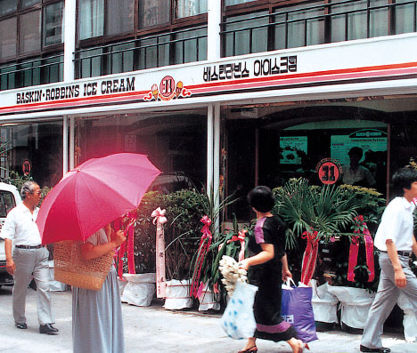
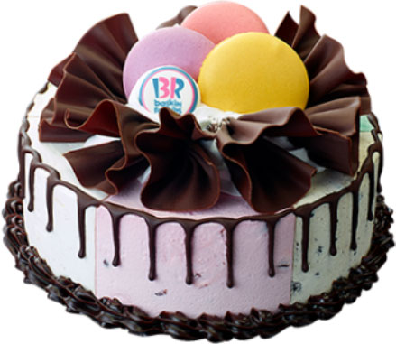
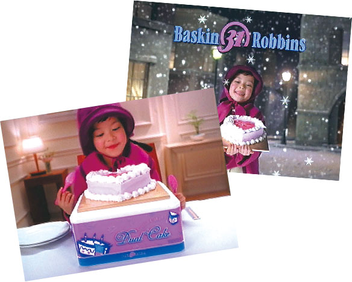
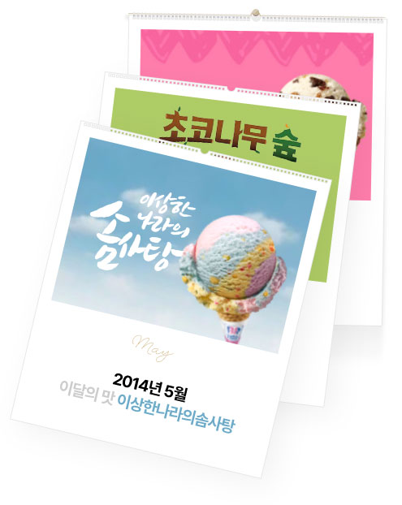
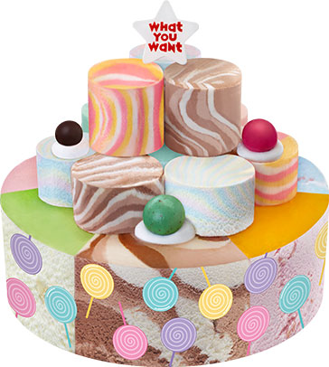
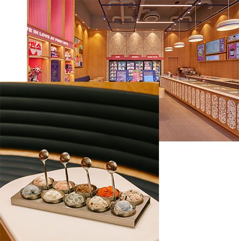
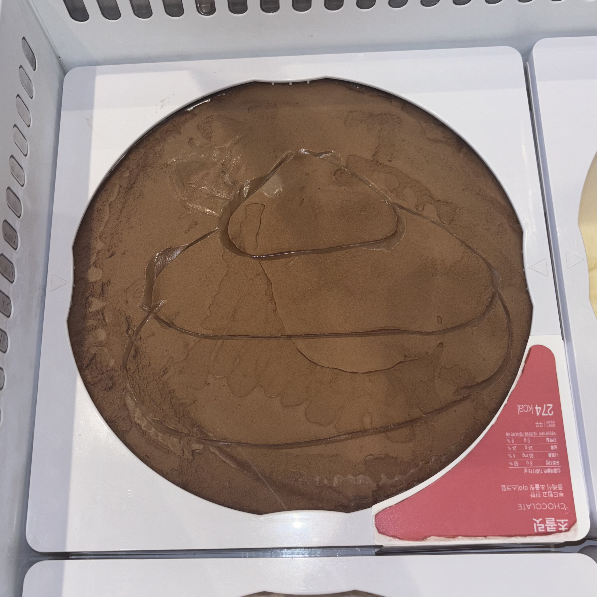

|  | 1986년 배스킨라빈스는 1986년 8월 9일 대한민국 서울, 명동에 1호점을 정식으로 오픈했습니다. 그 후 8월 13일에는 2호점을 오픈하며 프리미엄 아이스크림 시대를 시작하였습니다. 단순한 기호식품이 아닌 즐거움과 행복을 가 져다 주는 이미지를 창출한 '배스킨라빈스'는이후 국내 프리미엄 아이스크림 시장의 절반 이상을 점유하며, 등 장이래 현재까지 시장점유율 1위 자리를 유지 중입니다. |
1997년 배스킨라빈스 하면 빼놓을 수 없는 것이 바로 '아이스크림 케이크' 입니다. 배스킨라빈스는 1997년 국내 최초 '인크레더블' 아이스크림 케이크를 출시했습니다. 케이크 옆면에 초콜릿이 흘러내리는 형상의 제품은 당시 화제가 되었으며, 아이스크림으로 케이크를 만들 수 있다는 사실을 소비자들은 신선해하며 많은 사랑을 받았습니다.이후 국내 프리미엄 아이스크림 시장의 절반 이상을 점유하며, 등장 이래 현재까지 시장점유율 자리를 유지 중입니다. |  |
|  | 2001년 2000년에는 국내 500호점을 오픈하며, 한국은 전 세계에서 미국 다음으로 배스킨라빈스 매장이 두 번째로 많은 나라가 되었습니다. 배스킨라빈스 로고의 '31'이란 숫자는 창립자인 배스킨과 라빈스가 '한 달 31일 내 내 새로운 맛을 선사하겠다'는 의미로 만들었다고 합니다. 국내에서는 추억의 아이스크림 소녀 광고를 통해 배스킨라빈스의 인지도가 높아졌으며, 창립 이후 무려 1,500여개 이상의 맛이 출시 되며 '배스킨라빈스31'도 대중들의 인식 속에 자리잡았습니다. |
2007 배스킨라빈스는 2007년 1월부터 매 월 신제품을 출시하기 시작해, 점차 '이달의 맛'이라는 타이틀이 자리잡게 되었습니다. 신제품 뿐 아니라 베스트 제품도 이달의 맛으로 출시되어 당시의 대중들에게 호평을 받으며 정식 메뉴로 자리잡았습니다. 현재도 미니언즈, 스누피와 같이 인기있는 캐릭터 및 식음료 브랜드와도 협업해 매 월 아이스크림을 출시하고 있습니다. 남다른 아이스크림 작명 역시 인기를 뒷받침하며, 소비자 참여 콘테스트를 진행하는 등 색다른 재미를 주며 호기심을 불러일으키고 있습니다. |  |
|  | 2001년 2011년 배스킨라빈스에서는 새로운 컨셉의 골라먹는 아이스크림 케이크 '와츄원'을 출시했습니다. 4~8가지의 맛을 하나의 케이크에 골라먹을 수 있도록 디자인 되었으며 전 세계 배스킨라빈스 중 한국에서 최초로 선보였습 니다. 출시 3주만에 10만개 이상의 판매고를 올렸으며 예약 주문만 2만개가 몰리는 등 최고의 인기를 끌었습니 다. 이에 2011년 배스킨라빈스는 국내 1,000호점을 돌파했습니다 |
2020년 배스킨라빈스는 기존 형태의 매장에 이어 첫 카페형 매장인 ‘HIVE(하이브) 한남’, 한옥 콘셉트 매장 ‘삼청마당점’ 오픈 하였으며 전체 매장 수는 국내 1,500호점을 돌파했습니다. 그밖에도 온라인 전용 아이스크림을 출시 하는 등 다양한 시도를 진행하며, 2021년에는 100가지 다채로운 아이스크림을 판매하는 플래그십 스토어 ‘100 플 레이버’를 오픈하였습니다. '100 플레이버' 매장은 파르나스몰점을 시작으로 최근 오픈한 스퀘어 강남점, 강남대로점, 부산서면점 총 4곳에서 만나볼 수 있습니다. |  |
|  | 2023년 ~ 안나희는 고등학교 수업을 마친 후, 배스킨라빈스 면접을 보게 되었습니다. 면접에서 그녀는 밝은 태도와 성실함 을 보여주어 합격하였습니다. 2023년 12월부터 본격적으로 근무를 시작하게 되었고, 실수도 하면서 일에 적응 하고 있습니다. |